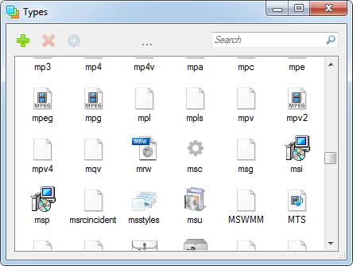

Types is a file type manager for Windows. It allows you to edit program associations, icons, context menus and a few other things.

(put the file into the same folder as the exe)
Portable | Code | CLI